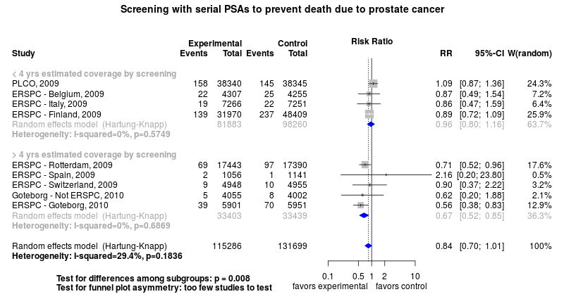
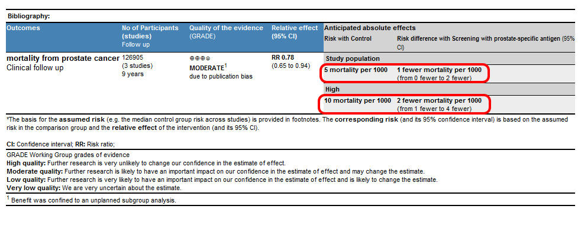

Clinical summary:
This meta-analysis suggests that clinical intervention is effective. Metaregression indicates a correlation between the benefit of screening and years of coverage added by screening with the prostate-specific antigen.
The optimal frequency of screening may be up to 2-4 years as this interval best explains the variation in the results of trails (see analysis).
The number need to invite (NNI) to prevent one death from prostate cancer is 1000 among the subgroup of trials adding more than 3 years of monitoring and 194 in the older cohort within the Göteborg trial.
However, the quality of evidence for benefit from PSA screening for prostate cancer is moderate due to our retrospective identification of subgroups.
Additional interpretations may be in the references in the 'Cited by' section below.
We included trials of screening for prostate cancer with serial testing of levels of prostate-specific antigen.
Methods overview: Studies were abstacted into standardized tables of , and results. This repository updates a previously published meta-analysis.(1) Newer studies included are listed in the references. Rationale for newer trials excluded may be listed at the end of the references.
See methods for details.
Results: Details of the studies included are in the:
The forest plot for the primary outcome is below. Additional forest plots of secondary analyses may be available.

The Summary of Findings Table (SoF) from the GRADE Profile is below (source files).

References:
Systematic review(s)
Most recent review at time of last revision of this repository
- Canadian Task Force on Preventive Health Care, Bell N, Connor Gorber S, Shane , Joffres M, Singh H, Dickinson J, Shaw E, Dunfield L, Tonelli M. Recommendations on screening for prostate cancer with the prostate-specific antigen test. CMAJ. 2014;186(16):1225-34. doi: 10.1503/cmaj.140703. PMID: 25349003; PMCID: PMC4216256
- Qaseem A, Barry MJ, Denberg TD, Owens DK, Shekelle P; Clinical Guidelines Committee of the American College of Physicians. Screening for prostate cancer: a guidance statement from the Clinical Guidelines Committee of the American College of Physicians. Ann Intern Med. 2013;158(10):761-9. doi: 10.7326/0003-4819-158-10-201305210-00633. PMID: 23567643.
- Ilic D, Neuberger MM, Djulbegovic M, Dahm P. Screening for prostate cancer. Cochrane Database Syst Rev. 2013 Jan 31;1:CD004720. doi: 10.1002/14651858.CD004720.pub3. PMID: 23440794
- Chou R, Croswell JM, Dana T, Bougatsos C, Blazina I, Fu R, Gleitsmann K, Koenig HC, Lam C, Maltz A, Rugge JB, Lin K. Screening for prostate cancer: a review of the evidence for the U.S. Preventive Services Task Force. Ann Intern Med. 2011;155(11):762-71. doi: 10.7326/0003-4819-155-11-201112060-00375. PMID: 21984740.
Randomized controlled trials
New trial(s) not included in the most recent review above
- None
Trials included
- Sandblom G, Varenhorst E, Rosell J, Löfman O, Carlsson P. Randomised prostate cancer screening trial: 20 year follow-up. BMJ. 2011;342:d1539. doi:10.1136/bmj.d1539. PMID: 21454449; PMCID: PMC3069219
- Hugosson J, Carlsson S, Aus G, et al. Mortality results from the Göteborg randomised population-based prostate-cancer screening trial. Lancet Oncol. 2010;11(8):725-32. doi: 10.1016/S1470-2045(10)70146-7. PMID: 20598634; PMCID: PMC4089887
- Schröder FH, Hugosson J, Roobol MJ, et al; ERSPC Investigators. Screening and prostate-cancer mortality in a randomized European study. N Engl J Med. 2009;360(13):1320-8. doi: 10.1056/NEJMoa0810084. PMID: 19297566
- Andriole GL, Crawford ED, Grubb RL 3rd, et al; PLCO Project Team. Mortality results from a randomized prostate-cancer screening trial. N Engl J Med. 2009;360(13):1310-9. doi: 10.1056/NEJMoa0810696. PMID: 19297565; PMCID: PMC2944770
- Labrie F, Candas B, Cusan L, et al. Screening decreases prostate cancer mortality: 11-year follow-up of the 1988 Quebec prospective randomized controlled trial. Prostate. 2004;59(3):311-8. PMID: 15042607
Trials undergoing review
- None
Trials excluded - selected list of important trials
- Kjellman A, Akre O, Norming U, Törnblom M, Gustafsson O. 15-year followup of a population based prostate cancer screening study. J Urol. 2009 Apr;181(4):1615-21; discussion 1621. doi: 10.1016/j.juro.2008.11.115. PMID: 19233435
Funding for this review
- None.
Cited by
This repository is cited by:
- WikiDoc contributors. Prostate Cancer Screening. WikiDoc. June 14, 2015. Available at: http://www.wikidoc.org/index.php/Prostate_cancer_screening. Accessed June 14, 2015.
{kind=link}
{kind=link}
{kind=link}
{kind=link}